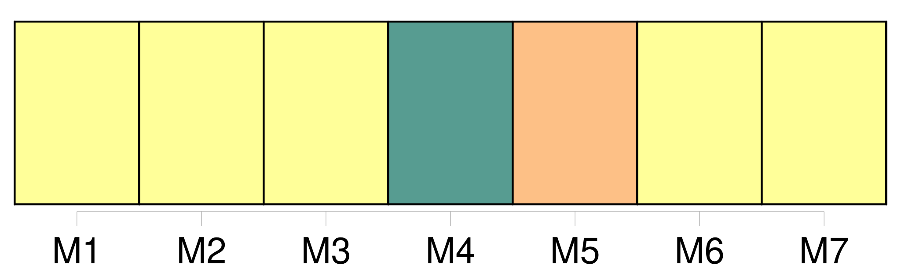
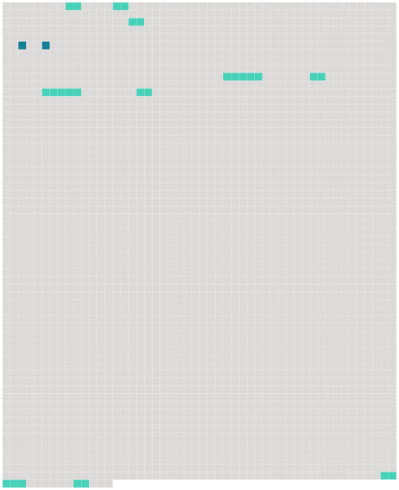

Longueur nb maillons : 11 mentions |
  |
La naissance de l'enfant sera déclarée par [le père] , ou à défaut [du père] , par les docteurs en médecine ou en chirurgie sages-femmes, officiers de santé ou autres personnes qui auront assisté à l'accouchement ; et lorsque la mère sera accouchée hors de son domicile, par la personne chez qui elle sera accouchée. [2 phrases]
L'acte de naissance énoncera le jour, l'heure et le lieu de la naissance le sexe de l'enfant, et les prénoms qui lui seront donnés, les prénoms, noms, profession et domicile [des père] et mère, et ceux des témoins. [5 phrases] S'il naît un enfant pendant un voyage de mer, l'acte de naissance sera dressé dans les vingt quatre heures en présence du [père] , s' [il] est présent et de deux témoins pris parmi les officiers du bâtiment, ou, à leur défaut, parmi les hommes de l'équipage. [4 phrases]
L'une de ces expéditions restera déposée au bureau de l'inscription maritime ou à la chancellerie du commissariat l'autre sera envoyée au Ministre de la marine, qui fera parvenir une copie, de lui certifiée, de chacun desdites actes, à l'officier de l'état civil du domicile [du père de l'enfant] , ou de la méfie si [le père] est inconnu cette copie sera inscrite de suite sur les registres. [1 phrases]
À l'arrivée du bâtiment dans le port du désarmement, le rôle d'équipage sera déposé au bureau du préposé à l'inscription maritime, qui enverra une expédition de l'acte de naissance, de lui signée, à l'officier de l'état civil du domicile [du père de l'enfant] , ou de la mère, si [le père] est inconnu : cette expédition sera inscrite de suite sur les registres. [94 phrases]
L'officier chargé de la tenue du registre de l'état civil devra, dans les dix jours qui suivront l'inscription d'un acte, de naissance audit registre, en adresser un extrait à l'officier de l'état civil du dernier domicile [du père de l'enfant] , ou de la mère si [le père] est inconnu. |
 |
La ressource peut être téléchargée sur la page Ortolang
Si vous avez des questions ou vous voyez des erreurs, merci d'envoyer un mail à silvia.federzoni89@gmail.com
Site développé par S. Federzoni (contact)